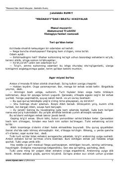

MIJaloliddin Rumiyning 'Masnaviy' asaridan saralangan ibratli va hikmatli hikoyalar to'plami.
Ushbu kitob Jaloliddin Rumiyning mashhur 'Masnaviy' asaridan saralab olingan ibratli hikoyalarni o'z ichiga oladi. Hikoyalar insoniy fazilatlar, nafs tarbiyasi va ma'naviy kamolot haqida hikoya qiladi.